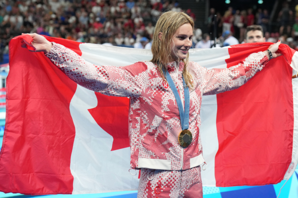

年仅17岁的多伦多游泳天才萨默·麦金托什（Summer McIntosh），一人夺得3枚金牌和1枚银牌。（Nathan Denette/加通社） 【2024年08月06日讯】（记者季薇多伦多报导）2024年巴黎奥运会对于加拿大游泳队来说，确实是一次历史性的盛会。在巴黎拉德芳斯竞技场（Paris La Defense Arena）进行的为期九天的游泳赛事中，加拿大队摘得3金2银3铜，总计8枚奖牌，载誉而归。
多伦多游泳天才喜摘3金
年仅17岁的多伦多游泳天才萨默·麦金托什（Summer McIntosh），一人夺得3枚金牌和1枚银牌，成为第一位在一届奥运会上赢得3枚金牌的加拿大运动员，并列成为在一届奥运会获得奖牌最多的加拿大运动员。
此前，在2016年里约奥运会上，加拿大泳将佩妮·奥莱克夏克（Penny Oleksiak）在一届夏季奥运会上赢得过1金1银2铜，总计4枚奖牌。
8月3日，麦金托什在法国巴黎奥运会上获得女子200米个人混合泳金牌——她的第3枚金牌。
麦金托什在比赛第一天获得女子400米自由泳银牌，随后在400米混合泳、200米蝶泳夺得金牌。
加拿大奥委会表示，麦金托什在400米混合泳比赛中以压倒性优势获胜；在200米混合泳比赛中，于最后50米上演了精彩的逆转，最终夺得金牌。这两场胜利都令人难忘。
打破两项奥运、两项加国纪录
麦金托什在巴黎创造了两项奥运纪录。
在200米蝶泳比赛中，她以2分3.03秒的成绩打破了中国选手张雨霏在东京奥运创造的2分3.86的纪录。
在200米混合泳中，以2分6.56秒的成绩，打破了匈牙利选手卡廷卡·侯斯苏（Katinka Hosszú）在2016年里约奥运会上创造的2分6.58秒的纪录。
加拿大泳将19岁的伊利亚·卡伦（Ilya Kharun）在8月3日举行的男子200米蝶泳比赛中，以1分52秒80的成绩夺得铜牌，创下加拿大的最好成绩。
同一日，乔什·利恩多（Josh Liendo）在100米蝶泳中以49秒99的成绩，刷新了加拿大纪录；卡伦夺得铜牌。这是加拿大自1976年蒙特利尔奥运会以来，首次，在夏季奥运会上两名运动员同时登上领奖台。
加拿大男队在巴黎奥运上赢得了三枚奖牌，摆脱了2012年伦敦奥运以来的奖牌荒。
截至周一（8月5日），在巴黎奥运会上，加拿大摘得5金4银8铜，总计17枚奖牌。
责任编辑：岳怡